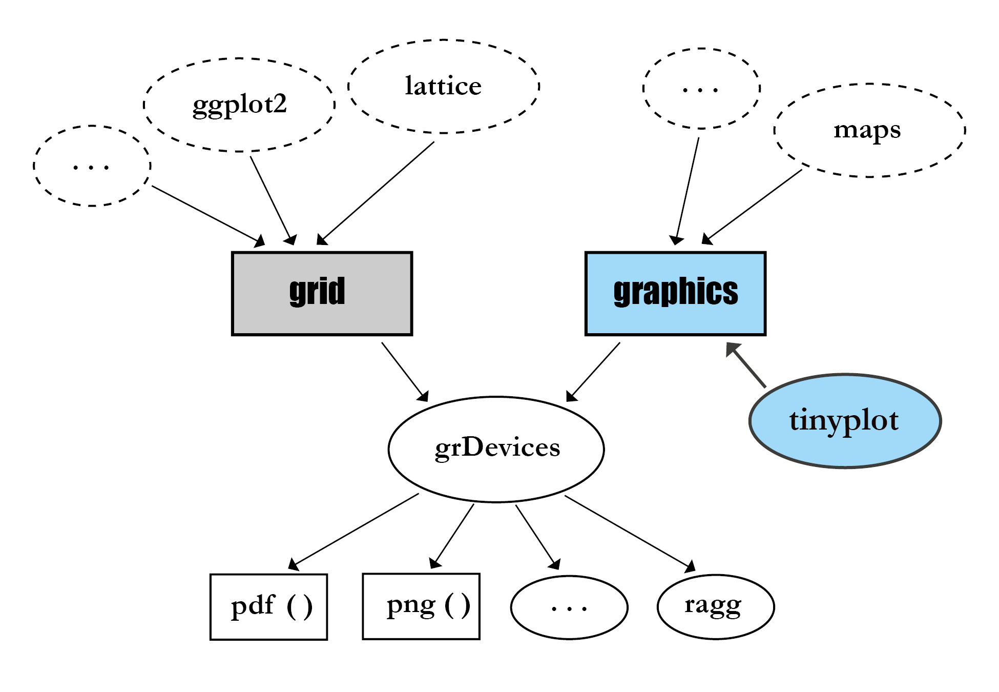

Lightweight extension of the base R graphics system
![]()
August 9, 2025
Disclaimer
tinyplot was developed in my own time and does not relate to my position at Amazon.
All views expressed during this talk are my own, and do not necessarily reflect the views of my employer.
Motivating example
Everyone’s favourite penguins…
base::plot
Simple scatter plot
base::plot
Let’s add some grouping
NB: col = species works here because species is a factor.
base::plot
Add a legend
Q: Can you spot the error?
base::plot
Add a legend
A: We should have used levels(species), not unique(species).
base::plot
How about a different plot type?
Ugh… our grouped coloring logic only works for the “points” components.
base::plot
Problems and pitfalls of our base plot approach
- How do we automate the legend mapping and avoid manual error?
- What if we want to place the legend outside of the plot region?
- How do we group by additional variables?
- What if we want groups with a different plot type (e.g, lines)?
- What if we need to group by a continuous variable?
- What if we need to facet by another variable?
- What if we want to add a summary function, e.g. regression fit?
- The plots are kind of ugly. Can we make them look better?
- …
Enter tinyplot
Tip
In the plots that follow, plt(...) is a shorthand alias for tinyplot(...).
tinyplot::plt
Simplest case: drop-in replacement for base::plot

But we can do a lot more than that…
tinyplot::plt
How do we automate the legend mapping?
tinyplot::plt
How do we group by additional variables?
tinyplot::plt
What if we want groups with a different plot type?
tinyplot::plt
What if we need to group by a continuous variable?
tinyplot::plt
What if we need to facet by another variable?
tinyplot::plt
What if we want to add a summary function, e.g. regression fit?
tinyplot::plt
The plots are kind of ugly. Can we make them look better?
NB: Themes are persistent; subsequent (tiny)plots will inherit this aesthetic.
Background
Origin story
Two sources of frustration:
Package development üì¶
- Annoying trade-offs for supporting basic viz. methods for my packages.
- “I just need a simple errorbar here. Do I really have to finagle
segmentsto make this work?” “What about a legend..?”
Teaching üéì
- Teach simple viz. approaches vs. scalability down the road.
- Base plotting is great for simple plots, but quickly loses its appeal for more complex plots. (And
ggplot2/latticehave different APIs.)
grid vs graphics
R has two low-level graphics systems
Note: Adapted from Murrell (2023).
Base graphics in R
Very flexible… but tricksy
Base graphics can produce amazing plots.
plot()is just an (opinionated) wrapper around lower-level functions. (Koncevičius 2022)
- This is very powerful in expert hands. (Mayakonda 2022)
But going beyond the defaults is often (much) more work that I want to do.
grid vs graphics (redux)
R has two low-level graphics systems
grid vs graphics (redux)
R has two low-level graphics systems
grid vs graphics (redux)
R has two low-level graphics systems
tinyplot goals:
- Make base R graphics more user-friendly.
- Improved feature parity vs. grid-based üì¶s like ggplot2 and lattice.
Origin story ü§ù
Collaboration
A basic version of the core routine (then called “plot2.R”) sat on my computer for a long time.
I eventually packaged it up… and invited two key collaborators:


tinyplot API
tinyplot API
Group(s) after the pipe |
tinyplot API
Groups map to colors; use the "by" keyword for other mappings
Also works for lwd, lty, etc.
tinyplot API
Legend can be moved, customized and turned off
A "!" suffix places the legend outside the plot area.
tinyplot API
facets

tinyplot API
types
tinyplot types can be passed as either a string or function:
| string | "p" |
"density" |
"lm" |
"<name>" |
| function | type_points() |
type_density() |
type_lm() |
type_<name>() |
tinyplot API
types
tinyplot API
Layers
tinyplot API
Themes
Themes provide a convenient way to set a preferred aesthetic for your plots.
- Dynamic reduction of whitespace, etc.
- Remember:
tinytheme(...)is persistent.
Quick plotting function, which we’ll re-use for showcasing some themes on the next slide:
tinyplot API
Themes
Other features
Many other bells and whistles
- Easily export plots with the
fileargument. - Easy alpha transparency with the
alphaandfillarguments. - Transform axis labels (
x/yaxl) and breaks (x/yaxb). - Custom types.
- etc.
Quickfire gallery
Quickfire gallery
histogram
Quickfire gallery
box plots
Quickfire gallery
violin plots
Quickfire gallery
error bars
Quickfire gallery
rectangles

Quickfire gallery
spineplot
Quickfire gallery
ridge plot
Conclusions
Advantages of tinyplot
The sales pitch summary
- Concise
- Consistent
- Ergonomic
- Extensive
- Lightweight
For the longer version: tinyplot pros
Disadvantages of tinyplot
What are the caveats?
- Layering gotchas
- Custom layout
- Missing features
For the longer version: tinyplot cons
Acknowledgements
tinyplot would not be where it is today without…
The R Core team:
- Especially Paul Murrell, who has almost single-handedly built and maintained R’s graphics foundations for everyone else.
My wonderful tinyplot co-maintainers:
- Vincent Arel-Bundock and Achim Zeileis
Many other contributors, feedback providers, and a sources of inspiration.
- Etienne Bacher, etc.
- the ggplot2 team (Hadley, Thomas, Teun, etc.)
tinyplot
Learn more
References
Bonus: Tinyplot pros
Concise
The formula API gives bang for buck
P.S. Thanks to Ryan for letting me use this screenshot.
Concise
The formula API gives bang for buck
Just focusing on the core plot components…
(That’s about 1/3 fewer characters.)
Concise
Concision is even starker vs. vanilla base plot

Lightweight
Base R only
tinyplot has zero third-party dependencies.
- Compares favourably against lattice (0 deps), ggplot2 (24 deps), tidyplots (111 deps), etc.
We’ve also kept the size of the install tarball down to a minimum (<1 MB).
- All “data heavy” artifacts are reserved for the tinyplot website (including a comprehensive test suite and set of vignettes).
Very fast to install and play with in webR / WebAssembly. (Try it!)
- Great for teaching or quick demos with colleagues.
Bonus: Tinyplot cons
Layering gotchas
Scaling is fixed by the first layer
This is a limitation of graphics “canvas” logic. (Workarounds: Change layer order, or use x/ylim.)
Layering gotchas
Can’t combine file with plt_add (yet)
This doesn’t work:
I’m hoping to provide a native solution in the future, but workarounds for now:
- Use
plt(..., file = "myplot.png", draw = ...) - Open/close the appropriate graphics device manually, e.g.
png("myplot.png"); plt(...); plt_add(...); dev.off()
Missing features
I hope that I have convinced you that tinyplot covers a lot of ground.
- The API should also be very stable. I expect few (if any) breaking changes from here on out.
Still, tinyplot is a relatively young project and there are some features and plot types that we don’t support (yet). Some things coming down the pike: